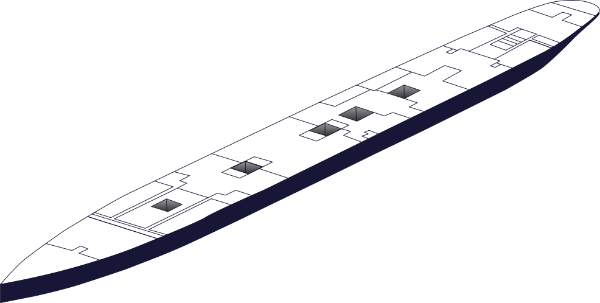

Réservez votre ticket
pour le Titanic !

Ces ponts comprenaient la promenade de première classe, le fumoir, ainsi que les canots de sauvetage. La passerelle de commandement et la salle radio étaient situées ici, servant à la navigation et aux communications.

Ces ponts étaient réservés aux passagers les plus fortunés, avec des suites luxueuses, le restaurant à la carte, le Café Parisien et d’autres services prestigieux. Le bureau du commissaire de bord se trouvait aussi ici.
Ces niveaux mélangeaient les cabines de première, deuxième et troisième classe. On y trouvait aussi la grande salle à manger de première classe, la salle à manger de seconde classe, ainsi que les accès aux ascenseurs et aux allées des stewards.

Ces ponts hébergeaient les cabines de troisième classe, une population majoritairement composée de familles et d’immigrants. On y trouvait aussi des services comme la salle à manger, les sanitaires, l’hôpital, ainsi que la piscine et les bains turcs.
Ces niveaux souterrains contenaient les salles des machines, les chaudières, et les réserves de charbon. C’était le cœur technique du navire, inaccessible aux passagers.
Ces ponts comprenaient la promenade de première classe, le fumoir, ainsi que les canots de sauvetage. La passerelle de commandement et la salle radio étaient situées ici, servant à la navigation et aux communications.
Ces ponts étaient réservés aux passagers les plus fortunés, avec des suites luxueuses, le restaurant à la carte, le Café Parisien et d’autres services prestigieux. Le bureau du commissaire de bord se trouvait aussi ici.
Ces niveaux mélangeaient les cabines de première, deuxième et troisième classe. On y trouvait aussi la grande salle à manger de première classe, la salle à manger de seconde classe, ainsi que les accès aux ascenseurs et aux allées des stewards.
Ces ponts hébergeaient les cabines de troisième classe, une population majoritairement composée de familles et d’immigrants. On y trouvait aussi des services comme la salle à manger, les sanitaires, l’hôpital, ainsi que la piscine et les bains turcs.
Ces niveaux souterrains contenaient les salles des machines, les chaudières, et les réserves de charbon. C’était le cœur technique du navire, inaccessible aux passagers.